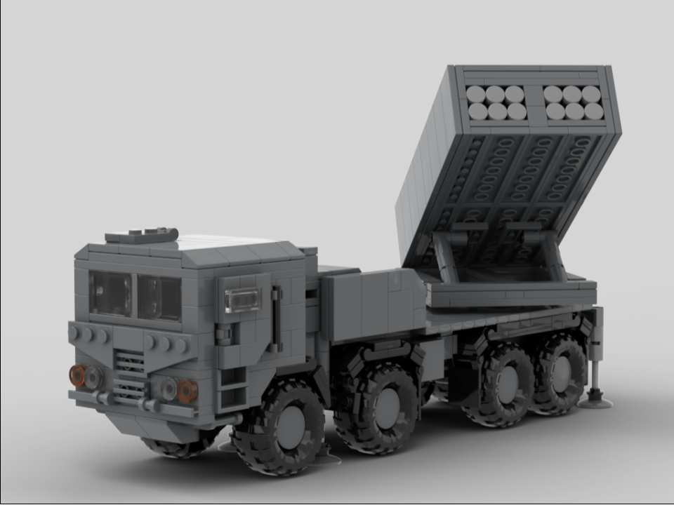

The K239 MLRS is a South Korean multiple rocket launcher built upon an 8x8 truck chassis. Its missile launcher contains two pods, with each pod capable of firing twenty 130mm unguided rockets, six 227mm unguided rockets, or six 239mm guided missiles with a range up to 160 km (99 miles). Its main purpose is to target North Korean bunkers and personnel, and can fire 12 missiles at 12 different targets in under a minute. The vehicle itself is NBC protected and is armored against small-arms fire.
This model features four extendable hydraulic jacks, two opening doors and an opening roof hatch on the cab, a fully rotating and elevating missile launcher with six missiles, and eight rolling wheels (wow!).
Deployed:
